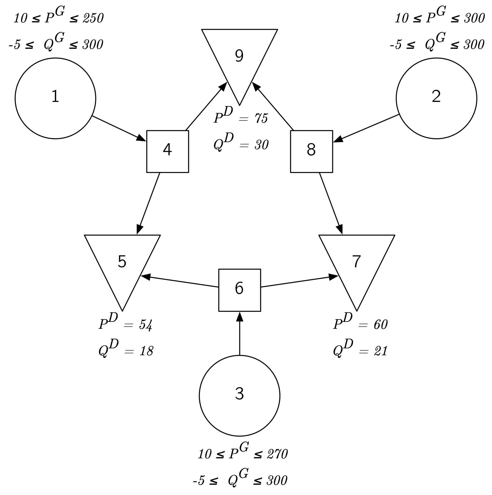

Optimal power flow
This tutorial was generated using Literate.jl. Download the source as a .jl file.
This tutorial was originally contributed by James Foster (@jd-foster).
This tutorial formulates and solves an alternating current optimal power flow (AC-OPF) problem, a much-studied nonlinear problem from the field of electrical engineering.
Once we've formulated and solved the nonlinear problem, we will turn our focus to obtaining a good estimate of the objective value at the global optimum through the use of semidefinite programming.
One main purpose of this tutorial is to highlight JuMP's ability to directly formulate problems involving complex-valued decision variables and complex matrix cones such as the HermitianPSDCone object.
For another example of modeling with complex decision variables, see the Quantum state discrimination tutorial, and see the Complex number support section of the manual for more details.
This tutorial takes a matrix-oriented approach focused on network nodes that simplifies the construction of semidefinite programs. Another approach is to formulate the problem focusing on network lines where it is easier to work with flow constraints. A general approach is provided by the Julia/JuMP package PowerModels.jl, an open-source framework to a broad range of power flow model formulations along with utilities for working with detailed network data.
Required packages
This tutorial requires the following packages:
using JuMP
import Clarabel
import DataFrames
import Ipopt
import LinearAlgebra
import SparseArraysInitial formulation
Optimal power flow problems for electrical transmission typically pose the following question: what is the most cost-effective operation of electricity generators while meeting constraints on the safe limits of network components?
We'll use the 9-node network test case case9mod to explore this problem. The graph of the network, shown here, has three nodes (or buses) each for the different purposes of generation $G$ (nodes 1, 2, and 3), trans-shipment (nodes 4, 6, and 8), and demand $D$ (nodes 5, 7, and 9).

This example is a modified version of the MATPOWER test case case9 (archive) created by Bukhsh et al. (2013) for their test case archive of optimal power flow problems with local optima. This test case is also extensively evaluated in Krasko and Rebennack (2017).
Here bus and network node are taken as analogous terms, as are branch and transmission line.
For future reference, let's name the number of nodes in the network:
N = 9;The network data can be summarised using a small number of arrays. Using the sparsevec function from the SparseArrays standard library package, we can give the indices and values of the non-zero data points:
# Real generation: lower (`lb`) and upper (`ub`) bounds
P_Gen_lb = SparseArrays.sparsevec([1, 2, 3], [10, 10, 10], N)
P_Gen_ub = SparseArrays.sparsevec([1, 2, 3], [250, 300, 270], N)
# Reactive generation: lower (`lb`) and upper (`ub`) bounds
Q_Gen_lb = SparseArrays.sparsevec([1, 2, 3], [-5, -5, -5], N)
Q_Gen_ub = SparseArrays.sparsevec([1, 2, 3], [300, 300, 300], N)
# Power demand levels (real, reactive, and complex form)
P_Demand = SparseArrays.sparsevec([5, 7, 9], [54, 60, 75], N)
Q_Demand = SparseArrays.sparsevec([5, 7, 9], [18, 21, 30], N)
S_Demand = P_Demand + im * Q_Demand9-element SparseArrays.SparseVector{Complex{Int64}, Int64} with 3 stored entries:
[5] = 54+18im
[7] = 60+21im
[9] = 75+30imThe key decision variables are the real power injections $P^G$ and reactive power injections $Q^G$over the allowed range of the generators. All other buses must restrict their generation variables to 0. On the other hand, these non-generator nodes have a fixed real and reactive power demand, denoted $P^D$ and $Q^D$ respectively (these are fixed at 0 in the case of trans-shipment and generator nodes).
The cost of operating each generator is modeled as a quadratic function of its real power output; in our specific test case, the objective function to minimize is:
\[\begin{align} \min & 0.11 \;\; (P^G_1)^2 + 5 P^G_1 + 150 \\ & + 0.085 \; (P^G_2)^2 + 1.2 P^G_2 + 600 \\ & + 0.1225 \; (P^G_3)^2 + P^G_3 + 335 \\ \end{align}\]
Let's create an initial JuMP model with some of this data:
model = Model(Ipopt.Optimizer)
set_silent(model)
@variable(model, P_Gen_lb[i] <= P_G[i in 1:N] <= P_Gen_ub[i])
@objective(
model,
Min,
(0.11 * P_G[1]^2 + 5 * P_G[1] + 150) +
(0.085 * P_G[2]^2 + 1.2 * P_G[2] + 600) +
(0.1225 * P_G[3]^2 + P_G[3] + 335),
);Even before solving an optimization problem, we can estimate a lower bound on the best objective value by substituting the lower bound on each generator's real power range (all 10, as it turns out in this case):
basic_lower_bound = value(lower_bound, objective_function(model));
println("Objective value (basic lower bound) : $basic_lower_bound")Objective value (basic lower bound) : 1188.75to see that we can do no better than an objective cost of 1188.75.
(Direct substitution works because a quadratic function of a single variable $x$ with positive coefficients is strictly increasing for all $x \geq 0$.)
In fact, we can get a quick but even better estimate from the direct observation that the real power generated must meet or exceed the real power demand:
@constraint(model, sum(P_G) >= sum(P_Demand))
optimize!(model)
better_lower_bound = round(objective_value(model); digits = 2)
println("Objective value (better lower bound): $better_lower_bound")Objective value (better lower bound): 2733.55However, there are additional power flow constraints that must be satisfied.
Power must flow from one or more generation nodes through the transmission lines and end up at a demand node. The state variables of our steady-state alternating current (AC) electrical network are complex-valued voltage variables $V_1, \ldots, V_N$. Voltages capture both a magnitude and phase of the node's electrical state in relation to the rest of the system. An AC power system also extends the notion of resistance in wires found in a direct current (DC) circuit to a complex quantity, known as the impedance, of each transmission line. The reciprocal of impedance is known as admittance. Together, these complex quantities are used to express a complex version of Ohm's law: current flow through a line is proportional to the difference in voltages on each end of the line, multiplied by the admittance.
Network data
Let's assemble the data we need for writing the complex power flow constraints. The data for the problem consists of a list of the real and imaginary parts of the line impedance. We obtain the following data table from the branch data section of the case9mod MATPOWER format file:
branch_data = DataFrames.DataFrame([
(1, 4, 0.0, 0.0576, 0.0),
(4, 5, 0.017, 0.092, 0.158),
(6, 5, 0.039, 0.17, 0.358),
(3, 6, 0.0, 0.0586, 0.0),
(6, 7, 0.0119, 0.1008, 0.209),
(8, 7, 0.0085, 0.072, 0.149),
(2, 8, 0.0, 0.0625, 0.0),
(8, 9, 0.032, 0.161, 0.306),
(4, 9, 0.01, 0.085, 0.176),
]);
DataFrames.rename!(branch_data, [:F_BUS, :T_BUS, :BR_R, :BR_X, :BR_Bc])| Row | F_BUS | T_BUS | BR_R | BR_X | BR_Bc |
|---|---|---|---|---|---|
| Int64 | Int64 | Float64 | Float64 | Float64 | |
| 1 | 1 | 4 | 0.0 | 0.0576 | 0.0 |
| 2 | 4 | 5 | 0.017 | 0.092 | 0.158 |
| 3 | 6 | 5 | 0.039 | 0.17 | 0.358 |
| 4 | 3 | 6 | 0.0 | 0.0586 | 0.0 |
| 5 | 6 | 7 | 0.0119 | 0.1008 | 0.209 |
| 6 | 8 | 7 | 0.0085 | 0.072 | 0.149 |
| 7 | 2 | 8 | 0.0 | 0.0625 | 0.0 |
| 8 | 8 | 9 | 0.032 | 0.161 | 0.306 |
| 9 | 4 | 9 | 0.01 | 0.085 | 0.176 |
The first two columns describe the network, supplying the from and to connection points of the lines. The last three columns give the branch resistance, branch reactance and line-charging susceptance.
We will also need to reference the base_MVA number (used for re-scaling):
base_MVA = 100;and the number of lines:
M = size(branch_data, 1)9From the first two columns of the branch data table, we can create a sparse incidence matrix that simplifies handling of the network layout:
A =
SparseArrays.sparse(branch_data.F_BUS, 1:M, 1, N, M) +
SparseArrays.sparse(branch_data.T_BUS, 1:M, -1, N, M)9×9 SparseArrays.SparseMatrixCSC{Int64, Int64} with 18 stored entries:
1 ⋅ ⋅ ⋅ ⋅ ⋅ ⋅ ⋅ ⋅
⋅ ⋅ ⋅ ⋅ ⋅ ⋅ 1 ⋅ ⋅
⋅ ⋅ ⋅ 1 ⋅ ⋅ ⋅ ⋅ ⋅
-1 1 ⋅ ⋅ ⋅ ⋅ ⋅ ⋅ 1
⋅ -1 -1 ⋅ ⋅ ⋅ ⋅ ⋅ ⋅
⋅ ⋅ 1 -1 1 ⋅ ⋅ ⋅ ⋅
⋅ ⋅ ⋅ ⋅ -1 -1 ⋅ ⋅ ⋅
⋅ ⋅ ⋅ ⋅ ⋅ 1 -1 1 ⋅
⋅ ⋅ ⋅ ⋅ ⋅ ⋅ ⋅ -1 -1We form the network impedance vector from the next two columns
z = (branch_data.BR_R .+ im * branch_data.BR_X) / base_MVA;and calculate it's corresponding bus admittance matrix as
Y_0 = A * SparseArrays.spdiagm(1 ./ z) * A';while the last column gives the branch line-charging susceptance
y_sh = 1 / 2 * (im * branch_data.BR_Bc) * base_MVA;and leads to the shunt admittance matrix
Y_sh = SparseArrays.spdiagm(
LinearAlgebra.diag(A * SparseArrays.spdiagm(y_sh) * A'),
);(The construction of the shunt admittance matrix Y_sh looks somewhat more complicated than Y_0 because we only want to add the diagonal elements in the calculation; the line-charging is used only in the nodal voltage terms and not the line voltage terms.)
The full bus admittance matrix $Y$ is then defined as
Y = Y_0 + Y_sh;JuMP model
Now we're ready to write the complex power flow constraints we need to more accurately model the electricity system.
We'll introduce a number of constraints that model both the physics and operational requirements.
Let's start by initializing a new model:
model = Model(Ipopt.Optimizer)
set_silent(model)Then we'll create the nodal power generation variables:
@variable(
model,
S_G[i in 1:N] in ComplexPlane(),
lower_bound = P_Gen_lb[i] + Q_Gen_lb[i] * im,
upper_bound = P_Gen_ub[i] + Q_Gen_ub[i] * im,
)9-element Vector{GenericAffExpr{ComplexF64, VariableRef}}:
real(S_G[1]) + imag(S_G[1]) im
real(S_G[2]) + imag(S_G[2]) im
real(S_G[3]) + imag(S_G[3]) im
real(S_G[4]) + imag(S_G[4]) im
real(S_G[5]) + imag(S_G[5]) im
real(S_G[6]) + imag(S_G[6]) im
real(S_G[7]) + imag(S_G[7]) im
real(S_G[8]) + imag(S_G[8]) im
real(S_G[9]) + imag(S_G[9]) imWe need complex nodal voltages (the system state variables):
@variable(model, V[1:N] in ComplexPlane(), start = 1.0 + 0.0im)9-element Vector{GenericAffExpr{ComplexF64, VariableRef}}:
real(V[1]) + imag(V[1]) im
real(V[2]) + imag(V[2]) im
real(V[3]) + imag(V[3]) im
real(V[4]) + imag(V[4]) im
real(V[5]) + imag(V[5]) im
real(V[6]) + imag(V[6]) im
real(V[7]) + imag(V[7]) im
real(V[8]) + imag(V[8]) im
real(V[9]) + imag(V[9]) imand operational constraints for maintaining voltage magnitude levels:
@constraint(model, [i in 1:N], 0.9^2 <= real(V[i])^2 + imag(V[i])^2 <= 1.1^2)9-element Vector{ConstraintRef{Model, MathOptInterface.ConstraintIndex{MathOptInterface.ScalarQuadraticFunction{Float64}, MathOptInterface.Interval{Float64}}, ScalarShape}}:
real(V[1])² + imag(V[1])² ∈ [0.81, 1.2100000000000002]
real(V[2])² + imag(V[2])² ∈ [0.81, 1.2100000000000002]
real(V[3])² + imag(V[3])² ∈ [0.81, 1.2100000000000002]
real(V[4])² + imag(V[4])² ∈ [0.81, 1.2100000000000002]
real(V[5])² + imag(V[5])² ∈ [0.81, 1.2100000000000002]
real(V[6])² + imag(V[6])² ∈ [0.81, 1.2100000000000002]
real(V[7])² + imag(V[7])² ∈ [0.81, 1.2100000000000002]
real(V[8])² + imag(V[8])² ∈ [0.81, 1.2100000000000002]
real(V[9])² + imag(V[9])² ∈ [0.81, 1.2100000000000002]We also need to fix an origin or reference angle from which all other complex voltage angles (arguments) are determined. Here we will use node 1 as the nominated reference bus. Fixing the imaginary component of a reference bus to zero sets its complex voltage angle to 0, while constraining the real part to be non-negative disallows equivalent solutions that are just a reflection by 180 degrees:
@constraint(model, imag(V[1]) == 0);
@constraint(model, real(V[1]) >= 0);The power flow equations express a conservation of energy (power) principle, where power generated less the power consumed must balance the power exchanged with the network:
@constraint(model, S_G - S_Demand .== V .* conj(Y * V))9-element Vector{ConstraintRef{Model, MathOptInterface.ConstraintIndex{MathOptInterface.ScalarQuadraticFunction{ComplexF64}, MathOptInterface.EqualTo{ComplexF64}}, ScalarShape}}:
-1736.111111111111im real(V[1])² + 1736.111111111111im real(V[1])*real(V[4]) + 1736.111111111111 real(V[1])*imag(V[4]) - 1736.111111111111im imag(V[1])² - 1736.111111111111 imag(V[1])*real(V[4]) + 1736.111111111111im imag(V[1])*imag(V[4]) + real(S_G[1]) + imag(S_G[1]) im = 0
-1600im real(V[2])² + 1600im real(V[2])*real(V[8]) + 1600 real(V[2])*imag(V[8]) - 1600im imag(V[2])² - 1600 imag(V[2])*real(V[8]) + 1600im imag(V[2])*imag(V[8]) + real(S_G[2]) + imag(S_G[2]) im = 0
-1706.484641638225im real(V[3])² + 1706.484641638225im real(V[3])*real(V[6]) + 1706.484641638225 real(V[3])*imag(V[6]) - 1706.484641638225im imag(V[3])² - 1706.484641638225 imag(V[3])*real(V[6]) + 1706.484641638225im imag(V[3])*imag(V[6]) + real(S_G[3]) + imag(S_G[3]) im = 0
1736.111111111111im real(V[4])*real(V[1]) - 1736.111111111111 imag(V[4])*real(V[1]) + 1736.111111111111 real(V[4])*imag(V[1]) + 1736.111111111111im imag(V[4])*imag(V[1]) + (-330.7378962025307 - 3930.8888726118976im) real(V[4])² + (194.21912487147264 + 1051.0682051867932im) real(V[4])*real(V[5]) + (1051.0682051867932 - 194.21912487147264im) real(V[4])*imag(V[5]) + (136.51877133105802 + 1160.409556313993im) real(V[4])*real(V[9]) + (1160.409556313993 - 136.51877133105802im) real(V[4])*imag(V[9]) + (-330.7378962025307 - 3930.8888726118976im) imag(V[4])² + (-1051.0682051867932 + 194.21912487147264im) imag(V[4])*real(V[5]) + (194.21912487147264 + 1051.0682051867932im) imag(V[4])*imag(V[5]) + (-1160.409556313993 + 136.51877133105802im) imag(V[4])*real(V[9]) + (136.51877133105802 + 1160.409556313993im) imag(V[4])*imag(V[9]) + real(S_G[4]) + imag(S_G[4]) im = 0
(194.21912487147264 + 1051.0682051867932im) real(V[5])*real(V[4]) + (-1051.0682051867932 + 194.21912487147264im) imag(V[5])*real(V[4]) + (1051.0682051867932 - 194.21912487147264im) real(V[5])*imag(V[4]) + (194.21912487147264 + 1051.0682051867932im) imag(V[5])*imag(V[4]) + (-322.4200387138841 - 1584.0927014229458im) real(V[5])² + (128.20091384241147 + 558.8244962361526im) real(V[5])*real(V[6]) + (558.8244962361526 - 128.20091384241147im) real(V[5])*imag(V[6]) + (-322.4200387138841 - 1584.0927014229458im) imag(V[5])² + (-558.8244962361526 + 128.20091384241147im) imag(V[5])*real(V[6]) + (128.20091384241147 + 558.8244962361526im) imag(V[5])*imag(V[6]) + real(S_G[5]) + imag(S_G[5]) im = (54 + 18im)
1706.484641638225im real(V[6])*real(V[3]) - 1706.484641638225 imag(V[6])*real(V[3]) + 1706.484641638225 real(V[6])*imag(V[3]) + 1706.484641638225im imag(V[6])*imag(V[3]) + (128.20091384241147 + 558.8244962361526im) real(V[6])*real(V[5]) + (-558.8244962361526 + 128.20091384241147im) imag(V[6])*real(V[5]) + (558.8244962361526 - 128.20091384241147im) real(V[6])*imag(V[5]) + (128.20091384241147 + 558.8244962361526im) imag(V[6])*imag(V[5]) + (-243.70966193142118 - 3215.386180510695im) real(V[6])² + (115.5087480890097 + 978.4270426363173im) real(V[6])*real(V[7]) + (978.4270426363173 - 115.5087480890097im) real(V[6])*imag(V[7]) + (-243.70966193142118 - 3215.386180510695im) imag(V[6])² + (-978.4270426363173 + 115.5087480890097im) imag(V[6])*real(V[7]) + (115.5087480890097 + 978.4270426363173im) imag(V[6])*imag(V[7]) + real(S_G[6]) + imag(S_G[6]) im = 0
(115.5087480890097 + 978.4270426363173im) real(V[7])*real(V[6]) + (-978.4270426363173 + 115.5087480890097im) imag(V[7])*real(V[6]) + (978.4270426363173 - 115.5087480890097im) real(V[7])*imag(V[6]) + (115.5087480890097 + 978.4270426363173im) imag(V[7])*imag(V[6]) + (-277.22099541362326 - 2330.3249023271615im) real(V[7])² + (161.71224732461357 + 1369.7978596908442im) real(V[7])*real(V[8]) + (1369.7978596908442 - 161.71224732461357im) real(V[7])*imag(V[8]) + (-277.22099541362326 - 2330.3249023271615im) imag(V[7])² + (-1369.7978596908442 + 161.71224732461357im) imag(V[7])*real(V[8]) + (161.71224732461357 + 1369.7978596908442im) imag(V[7])*imag(V[8]) + real(S_G[7]) + imag(S_G[7]) im = (60 + 21im)
1600im real(V[8])*real(V[2]) - 1600 imag(V[8])*real(V[2]) + 1600 real(V[8])*imag(V[2]) + 1600im imag(V[8])*imag(V[2]) + (161.71224732461357 + 1369.7978596908442im) real(V[8])*real(V[7]) + (-1369.7978596908442 + 161.71224732461357im) imag(V[8])*real(V[7]) + (1369.7978596908442 - 161.71224732461357im) real(V[8])*imag(V[7]) + (161.71224732461357 + 1369.7978596908442im) imag(V[8])*imag(V[7]) + (-280.4726852537284 - 3544.5613130217034im) real(V[8])² + (118.76043792911486 + 597.5134533308592im) real(V[8])*real(V[9]) + (597.5134533308592 - 118.76043792911486im) real(V[8])*imag(V[9]) + (-280.4726852537284 - 3544.5613130217034im) imag(V[8])² + (-597.5134533308592 + 118.76043792911486im) imag(V[8])*real(V[9]) + (118.76043792911486 + 597.5134533308592im) imag(V[8])*imag(V[9]) + real(S_G[8]) + imag(S_G[8]) im = 0
(136.51877133105802 + 1160.409556313993im) real(V[9])*real(V[4]) + (-1160.409556313993 + 136.51877133105802im) imag(V[9])*real(V[4]) + (1160.409556313993 - 136.51877133105802im) real(V[9])*imag(V[4]) + (136.51877133105802 + 1160.409556313993im) imag(V[9])*imag(V[4]) + (118.76043792911486 + 597.5134533308592im) real(V[9])*real(V[8]) + (-597.5134533308592 + 118.76043792911486im) imag(V[9])*real(V[8]) + (597.5134533308592 - 118.76043792911486im) real(V[9])*imag(V[8]) + (118.76043792911486 + 597.5134533308592im) imag(V[9])*imag(V[8]) + (-255.27920926017288 - 1733.8230096448524im) real(V[9])² + (-255.27920926017288 - 1733.8230096448524im) imag(V[9])² + real(S_G[9]) + imag(S_G[9]) im = (75 + 30im)As above, the objective function is a quadratic cost of real power:
P_G = real(S_G)
@objective(
model,
Min,
(0.11 * P_G[1]^2 + 5 * P_G[1] + 150) +
(0.085 * P_G[2]^2 + 1.2 * P_G[2] + 600) +
(0.1225 * P_G[3]^2 + P_G[3] + 335),
);We're finally ready to solve our nonlinear AC-OPF problem:
optimize!(model)
solution_summary(model)* Solver : Ipopt
* Status
Result count : 1
Termination status : LOCALLY_SOLVED
Message from the solver:
"Solve_Succeeded"
* Candidate solution (result #1)
Primal status : FEASIBLE_POINT
Dual status : FEASIBLE_POINT
Objective value : 3.08784e+03
* Work counters
Solve time (sec) : 1.51432e-02
objval_solution = round(objective_value(model); digits = 2)
println("Objective value (feasible solution) : $(objval_solution)")Objective value (feasible solution) : 3087.84The solution's power generation (in rectangular form) and complex voltage values (in polar form using degrees) are:
DataFrames.DataFrame(;
Bus = 1:N,
ComplexPowerGen = round.(value.(S_G); digits = 2),
VoltageMagnitude = round.(abs.(value.(V)); digits = 2),
VoltageAngle_Deg = round.(rad2deg.(angle.(value.(V))); digits = 2),
)| Row | Bus | ComplexPowerGen | VoltageMagnitude | VoltageAngle_Deg |
|---|---|---|---|---|
| Int64 | Complex… | Float64 | Float64 | |
| 1 | 1 | 10.0-5.0im | 0.91 | -0.0 |
| 2 | 2 | 125.37-5.0im | 0.92 | 12.37 |
| 3 | 3 | 57.03-5.0im | 0.94 | 7.01 |
| 4 | 4 | 0.0+0.0im | 0.91 | -0.4 |
| 5 | 5 | 0.0+0.0im | 0.92 | -0.73 |
| 6 | 6 | 0.0+0.0im | 0.94 | 4.84 |
| 7 | 7 | 0.0+0.0im | 0.93 | 4.52 |
| 8 | 8 | 0.0+0.0im | 0.93 | 7.12 |
| 9 | 9 | 0.0+0.0im | 0.9 | -0.63 |
Relaxations and better objective bounds
The Ipopt solver uses an interior-point algorithm. It has local optimality guarantees, but is unable to certify whether the solution is globally optimal. The solution we found is indeed globally optimal. The work to verify this has been done in Bukhsh et al. (2013) and Krasko and Rebennack (2017), and different solvers (such as Gurobi, SCIP and GLOMIQO) are also able to verify this.
The techniques of convex relaxations can also be used to improve on our current best lower bound:
better_lower_bound2733.55To this end, observe that the nonlinear constraints in the AC-OPF formulation are quadratic equalities for power flow along with quadratic voltage inequalities.
Let's linearize these constraints by first making the substitution $W = V V^*$, where:
\[W = V V^* \quad \iff \quad W_{ii} = | V_i |^2, \quad W_{ik} = V_i \; \overline{V_k}, \quad \forall i, \, k \in \{ 1, \ldots, N \}\]
and where $V^*$ is the conjugate transpose of $V$.
On the face of it, this turns a quadratic voltage bound constraint like:
\[v_L \leq |V_i |^2 \leq v_U, \quad i \in \{ 1, \ldots, N \}\]
for some real $v_L$ and $v_U$ into a simple two-sided bound:
\[v_L \leq W_{ii} \leq v_U,\]
while each quadratic expression for the nodal power term:
\[ S^{Node}_i = V_i \overline{(YV)_i}\]
becomes the linear combination:
\[ S^{Node}_i = (E_{ii} Y^T) \bullet W.\]
Here $A \bullet B = \operatorname{tr}(A^* B)$ is the Frobenius inner product of two complex matrices, while $E_{kn}$ denotes the matrix unit with a single nonzero entry of 1 in row $k$ and column $n$.
E(k, n) = SparseArrays.sparse([k], [n], 1, N, N);Of course, we've shifted the nonlinearity into the equality constraint $W = V V^*$: it is this constraint we will now relax using a semidefinite programming approach.
We will make use of complex voltages and relax $W = V V^*$ to;
\[W \succeq V V^*,\]
where the relation $\succeq$ is the ordering in the Hermitian positive semidefinite cone.
The above constraint is equivalent to:
\[\begin{bmatrix} 1 & V^* \\ V & W \\ \end{bmatrix} \succeq 0\]
by the theory of the Schur complement. This matrix inequality implies a number of second-order cone constraints by taking certain $2 \times 2$ minors of the matrix for each $i \in \{ 1, \ldots, N \}$:
\[\begin{bmatrix} 1 & V_i^* \\ V_i & W_{ii} \\ \end{bmatrix} \succeq 0,\]
which is equivalent to the real second-order cone inequality:
\[\operatorname{real}(W_{ii}) \geq \operatorname{real}(V_i)^2 + \operatorname{imag}(V_i)^2.\]
We include these implied constraints as well for demonstration purposes.
Putting it all together we get the following semidefinite relaxation of the AC-OPF problem:
model = Model(Clarabel.Optimizer)
set_attribute(model, "tol_gap_rel", 1e-3)
set_attribute(model, "tol_feas", 1e-3)
set_attribute(model, "tol_ktratio", 1e-3)
@variable(
model,
S_G[i in 1:N] in ComplexPlane(),
lower_bound = P_Gen_lb[i] + Q_Gen_lb[i] * im,
upper_bound = P_Gen_ub[i] + Q_Gen_ub[i] * im,
)
@variable(model, W[1:N, 1:N] in HermitianPSDCone())
@variable(model, V[1:N] in ComplexPlane(), start = 1.0 + 0.0im)
@constraint(model, [i in 1:N], 0.9^2 <= real(W[i, i]) <= 1.1^2)
@constraint(model, real(V[1]) >= 0)
@constraint(model, imag(V[1]) == 0)
@constraint(model, 0.9 <= real(V[1]) <= 1.1)
@constraint(model, LinearAlgebra.Hermitian([1 V'; V W]) in HermitianPSDCone())
# 2 x 2 minor inequalities:
@constraint(
model,
[i in 1:N],
[0.5, real(W[i, i]), real(V[i]), imag(V[i])] in RotatedSecondOrderCone()
)
@constraint(
model,
[i in 1:N],
S_G[i] - S_Demand[i] == LinearAlgebra.tr((conj(Y) * E(i, i)) * W),
)
P_G = real(S_G)
@objective(
model,
Min,
(0.11 * P_G[1]^2 + 5 * P_G[1] + 150) +
(0.085 * P_G[2]^2 + 1.2 * P_G[2] + 600) +
(0.1225 * P_G[3]^2 + P_G[3] + 335),
)
optimize!(model)-------------------------------------------------------------
Clarabel.jl v0.5.1 - Clever Acronym
(c) Paul Goulart
University of Oxford, 2022
-------------------------------------------------------------
problem:
variables = 117
constraints = 493
nnz(P) = 3
nnz(A) = 547
cones (total) = 14
: Zero = 1, numel = 19
: Nonnegative = 2, numel = (18,39)
: SecondOrder = 9, numel = (4,4,4,4,...,4)
: PSDTriangle = 2, numel = (171,210)
settings:
linear algebra: direct / qdldl, precision: Float64
max iter = 200, time limit = Inf, max step = 0.990
tol_feas = 1.0e-03, tol_gap_abs = 1.0e-08, tol_gap_rel = 1.0e-03,
static reg : on, ϵ1 = 1.0e-08, ϵ2 = 4.9e-32
dynamic reg: on, ϵ = 1.0e-13, δ = 2.0e-07
iter refine: on, reltol = 1.0e-13, abstol = 1.0e-12,
max iter = 10, stop ratio = 5.0
equilibrate: on, min_scale = 1.0e-04, max_scale = 1.0e+04
max iter = 10
iter pcost dcost gap pres dres k/t μ step
---------------------------------------------------------------------------------------------
0 6.6673e+03 -3.0980e+05 3.16e+05 1.65e-02 7.87e-01 1.00e+00 3.34e+03 ------
1 3.3968e+03 -6.4534e+04 6.79e+04 3.04e-03 2.44e-01 2.41e+02 9.42e+02 8.13e-01
2 1.9798e+03 -1.7012e+04 1.90e+04 8.25e-04 9.73e-02 1.51e+02 3.06e+02 9.90e-01
3 2.1414e+03 -2.3620e+03 4.50e+03 1.88e-04 2.03e-02 3.29e+01 7.63e+01 8.60e-01
4 2.0597e+03 1.1123e+03 8.52e-01 3.78e-05 4.35e-03 5.52e+00 1.93e+01 8.55e-01
5 1.6312e+03 1.4437e+03 1.30e-01 5.66e-06 6.85e-04 9.18e-01 3.20e+00 9.12e-01
6 1.5768e+03 1.5579e+03 1.21e-02 5.34e-07 6.55e-05 9.28e-02 3.09e-01 9.19e-01
7 1.5691e+03 1.5654e+03 2.35e-03 9.56e-08 1.22e-05 1.96e-02 5.73e-02 8.55e-01
8 1.5657e+03 1.5640e+03 1.08e-03 3.99e-08 5.32e-06 8.54e-03 2.47e-02 7.64e-01
9 1.5653e+03 1.5641e+03 7.51e-04 2.74e-08 3.68e-06 5.83e-03 1.70e-02 4.59e-01
10 1.5645e+03 1.5641e+03 2.68e-04 9.54e-09 1.30e-06 2.07e-03 5.99e-03 6.71e-01
11 1.5644e+03 1.5643e+03 9.84e-05 3.52e-09 4.76e-07 7.32e-04 2.18e-03 8.82e-01
---------------------------------------------------------------------------------------------
Terminated with status = solved
solve time = 355mssdp_relaxation_lower_bound = round(objective_value(model); digits = 2)
println(
"Objective value (W & V relax. lower bound): $sdp_relaxation_lower_bound",
)Objective value (W & V relax. lower bound): 2753.16We can more easily see solution values by rounding out noisy data:
W_1 = SparseArrays.sparse(round.(value.(W); digits = 2))9×9 SparseArrays.SparseMatrixCSC{ComplexF64, Int64} with 81 stored entries:
1.2-0.0im 1.17-0.07im 1.16-0.05im … 1.18-0.02im 1.17+0.05im
1.17+0.07im 1.2-0.0im 1.17+0.02im 1.19+0.05im 1.17+0.12im
1.16+0.05im 1.17-0.02im 1.2-0.0im 1.19+0.03im 1.17+0.1im
1.18-0.03im 1.18-0.1im 1.17-0.08im 1.2-0.05im 1.18+0.03im
1.18-0.05im 1.18-0.12im 1.18-0.1im 1.2-0.07im 1.19+0.01im
1.18+0.02im 1.19-0.06im 1.19-0.03im … 1.21-0.0im 1.19+0.07im
1.18-0.01im 1.19-0.08im 1.18-0.06im 1.2-0.03im 1.19+0.05im
1.18+0.02im 1.19-0.05im 1.19-0.03im 1.21-0.0im 1.19+0.07im
1.17-0.05im 1.17-0.12im 1.17-0.1im 1.19-0.07im 1.18-0.0imand recover an approximation to the voltage variables as:
DataFrames.DataFrame(;
Bus = 1:N,
Magnitude = round.(abs.(value.(V)); digits = 2),
AngleDeg = round.(rad2deg.(angle.(value.(V))); digits = 2),
)| Row | Bus | Magnitude | AngleDeg |
|---|---|---|---|
| Int64 | Float64 | Float64 | |
| 1 | 1 | 0.94 | -0.0 |
| 2 | 2 | 0.87 | 3.63 |
| 3 | 3 | 0.87 | 2.56 |
| 4 | 4 | 0.88 | -1.23 |
| 5 | 5 | 0.88 | -2.1 |
| 6 | 6 | 0.89 | 0.88 |
| 7 | 7 | 0.89 | -0.2 |
| 8 | 8 | 0.89 | 1.08 |
| 9 | 9 | 0.88 | -2.44 |
For further information on exploiting sparsity see Jabr (2012).
This relaxation has the advantage that we can work directly with complex voltages to extend the formulation, strengthen the relaxation and gain additional approximate information about the voltage variables.
References and further resources
Bukhsh, W. A., Grothey, A., McKinnon, K. I., & Trodden, P. A. Local solutions of the optimal power flow problem. IEEE Transactions on Power Systems, 28(4), 4780-4788 (2013).
Jabr, R. A. Exploiting sparsity in SDP relaxations of the OPF problem. IEEE Transactions on Power Systems, 27(2), 1138-1139 (2011).
Krasko, V., & S. Rebennack. Chapter 15: Global Optimization: Optimal Power Flow Problem. In Advances and Trends in Optimization with Engineering Applications, 187—205. MOS-SIAM Series on Optimization. Society for Industrial and Applied Mathematics, 2017.
Test case case9mod: from the Test Case Archive of Optimal Power Flow (OPF) Problems with Local Optima.
R. D. Zimmerman, C. E. Murillo-Sanchez, & R. J. Thomas, MATPOWER: Steady-State Operations, Planning and Analysis Tools for Power Systems Research and Education, IEEE Transactions on Power Systems, 26(1), 12-19 (2011).
MATPOWER data format: MATPOWER manual; see especially Appendix B "Data File Format" and Table B-3.